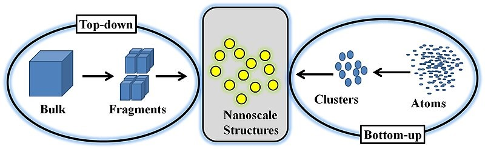
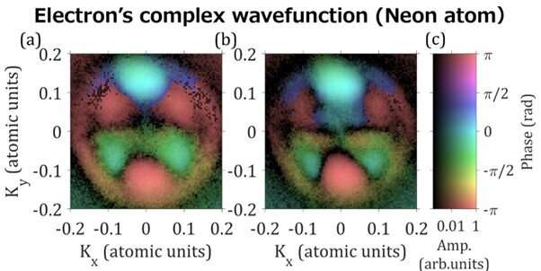
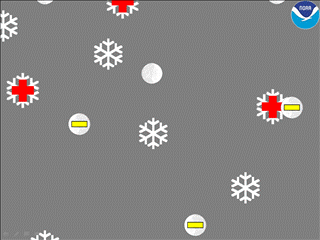

Humaira's Physics-learning Notebook

Today is 1 February, 2023.
Nanopartical Analysis
What is the scenario of nanoparticals in daily materials?
Nanometer-sized particles are present in many different materials, from food additives to high-performance metals to catalysts used for process optimization. As part of the process to enhance the properties of everyday materials, the characterization of nanoparticles involves the exploration and manipulation of structures at the nanoscale. Quantification of the composition, size, and shape of nanoparticles in these everyday objects is a crucial first step in furthering our understanding of the relationships between nanoparticles, performance, quality, and safety.
N.B.- Figure: Size, Shape, different types of Nanoparticals(Reference)
Facts that describe nanoparticals:
Nanoparticles are incredibly small objects that have a diameter between 1 and 100 nanometres (nm). Nanoparticles are smaller than almost all single-celled organisms and viruses.Nanoparticles tend to have very high surface-area-to-volume ratios, and this helps us to understand why their physical properties are vastly different from those of the same material in bulk.
Exampls of nanopartical range:
Human hair(diameter:80 000–100 000 nm), titania [titanium dioxide], silica [silica dioxide] particles, and fullerenes) or as soft (e.g., liposomes, vesicles, and nanodroplets).Avantages: used as drug carriers are high stability, high carrier capacity, feasibility of incorporation of both hydrophilic and hydrophobic substances, and feasibility of variable routes of administration, including oral application and inhalation.
The Thermo Scientific Automated Particle Workflow (APW) improves the research and product development process for industrial, academic, and government labs by providing an all-in-one software package that streamlines chemical analysis workflows.
APW is the only solution that automates the entire workflow, from acquisition to automated processing. With APW, you can quickly acquire statistically relevant, high-resolution (nanoscale) results over a large area. Thermo Scientific Maps EDS Software makes it possible to obtain data with much higher statistics (50 in total vs. >500/hour), while also simplifying the process. When this pulse irradiates a gas, an electron is ejected. This analysis and synthesis processes are beneficial in a sence of:What is the synthesis method of nanoparticles?
Nanoparticles are traditionally synthesized using wet chemistry methods, which involve first generating the particles in a solution, drop casting the wet particles onto a substrate, and removing the solvent, surfactants, and other materials from the particles. Applications of Nanoparticals:
What are the limitations of nanoparticles?The main limitations of MNPs are burst drug release and low stability features. To overcome this issue, surface ligands are attached to MNPs, which in turn improve the stability and solubility in biological environments along with exhibiting lesser side effects.
Today is 18 January 2023. New Breakthrough!
Attosecond physics
What's the experiment on?
Experiment with Ne atom: where Electron’s complex wavefunction shows the dual wave
nature of electron with the help of phase(rad)(color) contrast of Hua saturation value
with amplitude(brightness) Of the complex wavefunction of an electron.
Credit: Hiromichi Niikura from Waseda University.
N.B.- Figure: A Lone Attosecond Electron Pulse(Reference)
What's the challange?
Early 20th century: Quantum realm started where dual wave-particle nature was the
primary key approach taking the macroscopic world to the quantum era. Physicists use a
complex wave function to represent the wave nature of electrons. ( complex no: both real
& imaginary part)=> ratio: phase. Direct measurable quantities: real part. Challenge !!!!!
Solution to get out of this barrier?!
Now Attosecond physics opens a way to measure the phase of electrons. By attosecond time resolution, electron dynamics can be observed while freezing molecular motion—explained by Hiromichi Niikura dept of Applied Physics, Waseda university of Japan along with Prof. D.M. Villeneuve– a principal research scientist at the Joint Attosecond science Lab, National research council.
Both developed a breakthrough method, attosecond re-collision, and also demonstrated the imaging of a molecular orbital or electron wavefunction in a molecule. Another approach involves attosecond physics, using an attosecond laser pulse, or high-harmonic generation to visualize a complex wave function.
As energy resolution is smaller than the bandwidth of attosecond pulses, successful visualizing ⇒detailed wavefunction structure!!!
Researchers success: Visualized the complex wavefunction of an electron⇒ that can't be seen through conventional photoelectron spectroscopy!!!
Niikura says: Nowadays, photoelectron spectroscopy using EUV & X-ray has become a basic tool for investigating structures and dynamics of materials. The present method will provide a way to elucidate the QM properties of electrons.
What's the benefit???Visualizing the complete, detailed, complex electron wavefunction will be of significant impact in the field of Nanotechnology, chemistry, and molecular biology.
 My Paper comprehensionit's 30 October, 2021
Definition: Cubic spline is a spline(a piecewise polynomial fuction that can have a locally very simple form,yet at the same time be globally flexible and smooth and useful for modeling arbitrary functions) constucted of piecewise 3rd order polynoials which pass through a set of control points. The 2nd derivative of each polynomial is commonly set to zero at the end points,since this provides a boundary condition that completes the system of equations.
I know its very zigzag definition, so 1st let's make it simple... Like why we need it?
Behind the scene:
Real world numerical data are difficult to analyze and fall them under a function and finding the function is not that simple. So Cubic spline method is developed where a series of unique cubic
polynomials are fitted between each of the data points, with the stipulation(condition) that the curve
obtained be continuous and appear smooth.
Uses:These cubic splines can then be used to determine rates of change and cumulative change over an interval. Splines interpolate equally spaced data points, although a more robust(strong) form could encompass(include)unequally spaced points.
Funamental Idea: Cubic spline interpolation is based on the engineer’s tool
used to draw smooth curves through a number of points.
This spline consists of weights attached to a flat surface at the points to be connected. A flexible strip is then bent across each of these weights, resulting in a pleasingly smooth curve. The mathematical spline is similar in principle. The points, in this case, are numerical data. The weights are the coefficients on the cubic polynomials used to interpolate the data. These coefficients ’bend’ the line so that it passes through each of the data points without any erratic behavior or breaks in continuity.
Advantage: Cubic spline is used as the method of interpolation because of the advantages it provides in terms of simplicity of calculation, numerical stability and smoothness of the interpolated curve.
Usage: Cubic spline interpolation is a special case for Spline interpolation that is used very often to avoid the problem of Runge's phenomenon. This method gives an interpolating polynomial that is smoother and has smaller error than some other interpolating polynomials such as Lagrange polynomial and Newton polynomial.
Why is a 3 degree polynomial used in a cubic spline? : A cubic polynomial y=ax3+bx2+cx+d has four degrees of freedom, thus allowing to prescribe a total of four conditions, such as passing through two points and having specific slopes at two points.
Cubic Spline
Today is 14 October, 2021
Lightning begins as static charges in a rain cloud. Winds inside the cloud are very turbulent. Water droplets in the bottom part of the cloud are caught in the updrafts and lifted to great heights where the much colder atmosphere freezes them. Meanwhile, downdrafts in the cloud push ice and hail down from the top of the cloud. Where the ice going down meets the water coming up, electrons are stripped off.
It's a little more complicated than that, but what results is a cloud with a negatively charged bottom and a positively charged top. These electrical fields become incredibly strong, with the atmosphere acting as an insulator between them in the cloud.
When the strength of the charge overpowers the insulating properties of the atmosphere, Z-Z-Z-ZAP! Lightning happens.
The electric field "looks" for a doorknob. Sort of. It looks for the closest and easiest path to release its charge. Often lightning occurs between clouds or inside a cloud.
But the lightning we usually care about most is the lightning that goes from clouds to ground—because that's us!
As the storm moves over the ground, the strong negative charge in the cloud attracts positive charges in the ground. These positive charges move up into the tallest objects like trees, telephone poles, and houses. A "stepped leader" of negative charge descends from the cloud seeking out a path toward the ground. Although this phase of a lightning strike is too rapid for human eyes, this slow-motion video shows it happening.
As the negative charge gets close to the ground, a positive charge, called a streamer, reaches up to meet the negative charge. The channels connect and we see the lightning stroke. We may see several strokes using the same path, giving the lightning bolt a flickering appearance, before the electrical discharge is complete.
In a fraction of a second, lightning heats the air around it to incredible temperatures—as hot as 54,000 °F (30,000 °C). That's five times hotter than the surface of the Sun!
The heated air expands explosively, creating a shockwave as the surrounding air is rapidly compressed. The air then contracts rapidly as it cools. This creates an initial CRACK sound, followed by rumbles as the column of air continues to vibrate.
If we are watching the sky, we see the lightning before we hear the thunder. That is because light travels much faster than sound waves. We can estimate the distance of the lightning by counting how many seconds it takes until we hear the thunder. It takes approximately 5 seconds for the sound to travel 1 mile. If the thunder follows the lightning almost instantly, you know the lightning is too close for comfort!
Lightning is an important part of weather forecasting. The Geostationary Lightning Mapper instrument on the GOES-R series satellites can detect lightning activity over nearly the whole Western Hemisphere.
Scientists use data from GOES-R series satellites, along with data from the Lightning Imaging Sensor on NASA's Tropical Rainfall Measuring Mission satellite, to study lightning. This complete picture of lightning at any given time will improve "now-casting" of dangerous thunderstorms, tornadoes, hail, and flash floods.
To know more about visit: Reference